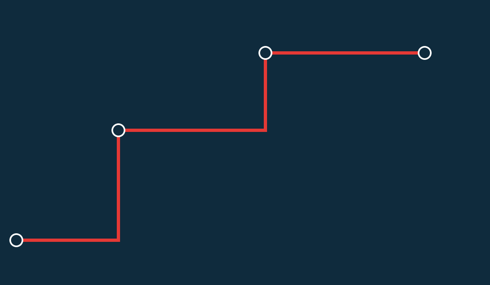

LOADBYTON OS / IDENTITY SYSTEM 1.0
A record follows
the movement.
Your logistics company, connected.
BASED ON PROJECT-LOADBYTON / 8c0e8e9
REVIEW CANDIDATE / OWNER APPROVAL PENDING
01 / BRAND CORE
Clarity behind
every movement.
Purpose: help logistics companies keep operational records, source documents and commercial context in one workspace.
Audience: owners, finance teams, forwarders, dispatchers, warehouse operators and delivery coordinators working in the UAE.
Personality: precise, dependable, direct, connected and practical.
Brand architecture
- LOAD|BY|TON: the parent identity shared with Project-Loadbyton.
- LOAD|BY|TON.store: commerce and operating workspace identity.
- Loadbyton OS: the repository/product shorthand. Use the operating-platform descriptor when context is needed.
- Products: Freight, Transport, Warehouse, Fulfilment, Delivery, Customs, Finance and Intelligence. Lockups express a family; they do not assert commercial availability.
Primary lines
“Your logistics company, connected.”
“Run the movement. Know the margin.”
02 / LOGO SYSTEM
Two dividers.
One context.
The parent wordmark follows the reference: heavy Geist type, two red dividers and a stacked B/Y. OS masters contain only vector paths, with no raster embedding or required fonts.
Clear space and size
- Keep at least 18 native units around the drawn full logo, equivalent to the left inset. Increase surrounding whitespace in print and covers.
- Use the full .store logo at 156 CSS px wide or more. Use the BY icon below this size.
- Use the icon at 16 px or more; favicon.svg is drawn for small sizes. Use the 512 px maskable file for adaptive app surfaces.
- Use navy on white/cream, and white on navy. Monochrome variants are available for one-colour production.
Do not
Stretch, rotate, bevel, blur, add a shadow, change divider colours, recreate the wordmark with typed text, place it on a busy photograph, or present the reference project's malformed icon SVG as a vector master.
MASTERS / SVG · PRINT / PDF · SHARING / PNG
03 / COLOUR
Structure. Signal. Space.
#0F2B3D#E53935#FFFDF7| Role | HEX | RGB |
|---|---|---|
| Structure / Navy | #0F2B3D | 15, 43, 61 |
| Identity / Red | #E53935 | 229, 57, 53 |
| Accessible action / Deep red | #C62828 | 198, 40, 40 |
| Canvas / Warm white | #FFFDF7 | 255, 253, 247 |
| Body / Ink | #0F2129 | 15, 33, 41 |
| Secondary text / Slate | #586A72 | 88, 106, 114 |
Aim for 60–70% neutral canvas, 25–35% navy structure and at most 10% red accent. Use blue only for links/data distinctions; green and amber communicate labelled status.
Accessibility and print
Small white text on #E53935 falls below 4.5:1. Use #C62828 for small button labels. Status always includes text or an icon, not colour alone. The generated contrast report checks defined pairs in both themes.
HEX and RGB are authoritative. CMYK estimates in colour-specs.json are unprofiled starting points; ask the printer to convert using its press/paper ICC profile and approve a physical proof. PDFs are vector RGB proof files, not certified PDF/X production files.
04 / TYPOGRAPHY
Readable operations.
Movement
has context.
Clear actions.
Specific records.
Useful evidence.
LBT-2026-001
AED 12,450.00
| Use | Size / line height | Weight |
|---|---|---|
| Cover / hero | 48–60 px / 1.1 | 600–700 |
| Page title | 30–38 px / 1.15 | 600–700 |
| Section title | 24 px / 1.25 | 600 |
| Body / form | 16 px / 1.55 | 400–500 |
| Labels / data | 12–14 px / 1.45 | 500–600 |
Use Inter for long passages and tabular figures for money. JetBrains Mono is an accent for identifiers and short data, not body paragraphs.
Noto Sans Arabic is included for Arabic-script rendering and RTL layouts. Arabic brand transliteration, translated copy and legal/tax wording still require native-speaker and qualified review. The Latin wordmark must not be mirrored in RTL.
05 / GRAPHIC LANGUAGE
A common visual rhythm.

Illustration and imagery
Use flat geometry, container-grid rhythm, route lines and two-divider accents. Original vector illustrations cover shipments, warehouses, documents, cash control and honest empty/restricted/maintenance states.
For photography, use permitted images of actual ports, loading areas, warehouse details and people doing real work. Prefer quiet compositions, navy shadows, natural light and space for text. Avoid random office stock, fictional certifications, AI robot imagery and photos that imply an owned fleet or real customer endorsement.
Icon system
Twenty-four original 24-unit icons use a 1.7-unit stroke and round joins. Eighteen map to the sector catalogue; the rest cover finance, intelligence, documents, security, support and settings. Use one optical size and stroke weight together.
Motion
Use short, purposeful state changes. Support prefers-reduced-motion. The identity does not depend on animation or a cinematic background.
06 / VOICE AND CLAIMS
Say what happens.
Write like an operator: direct, specific, numerate. Connect actions to source records. Separate pilots, planned integrations and verified availability.
| Use | Avoid |
|---|---|
| “Review the source document.” | “Unlock seamless compliance.” |
| “Awaiting independent finance review.” | “Your money is guaranteed safe.” |
| “Cards and eligible wallets through hosted checkout.” | “Every UAE customer can use Google Pay.” |
| “Manual Customs evidence handover.” | “Official Mirsal clearance built in.” |
| “Pilot availability requires confirmation.” | “Every sector is production certified.” |
Templates and personal details
Square brackets are intentional editable placeholders. Replace them with verified contact/legal information before sharing. Do not insert fictional customer statistics, account details, signatures, tax identifiers or social proof.
Invoice, packing list and POD layouts are visual stationery. They do not issue a national e-invoice, certify clearance, record a payment, or prove delivery. The application workflow and verified source evidence determine those states.
07 / APPLICATIONS AND HANDOFF
From tab to document.
| Surface | Supplied size / format |
|---|---|
| Browser / app | SVG favicon; ICO 16/32/48; touch 180; app 192/512; maskable 512 |
| Social | 1080 square; 1080 × 1350 portrait; 1080 × 1920 story |
| Sharing / covers | 1200 × 630 OG; LinkedIn post/company/personal; X; YouTube safe-area cover |
| Web / email | 1920 × 960 hero; 1200 × 320 email header; editable HTML signature and email templates |
| Presentation | 1920 × 1080 cover/content/closing; editable PowerPoint deck |
| Stationery | 85 × 55 mm card; A4 letterhead/proposal/one-pager; DL envelope; staff badge |
| Document layouts | Invoice, packing-list and POD visual templates |
Print artboards include 3 mm bleed where stated. Keep live content at least 5 mm inside trim. Staff badges have no automatic bleed. The guide and PDFs do not add crop marks; printers must confirm imposition, paper, colour profile and trim.
Source and rebuild
brand.config.json is the brand/copy/contact inventory. scripts/build-brand.py regenerates vector masters and templates; scripts/export-brand.mjs exports PNG/PDF and app icons; scripts/package-brand.py generates colour/contrast reports, editable PPTX and the checked ZIP.
08 / APPROVAL AND PROVENANCE
Ready for review.
Reference: Project-Loadbyton at commit 8c0e8e9f5239b1689f333ec21cdb9cdffc7e2fa4, its brand guidelines, tokens and text-based full wordmark. Its malformed icon SVGs were inspected but not reused. The OS .store extension, outlined masters, flat BY mark, icons, templates and library are new derivatives created for this repository.
The reference MIT notice is included in licenses/. Font packages are Fontsource Variable 5.3.0 with each OFL notice retained. Font outlines are included only as artwork; the original font files retain their original names and notices.
Approval remains pending
- Owner acceptance of the parent/.store/OS architecture, rebuilt BY icon, palette and templates.
- Independent trademark clearance where required and review of licensed third-party content.
- Native review of Arabic brand/copy and qualified review of legal/tax wording.
- Registrar evidence for domain ownership; a brand asset or DNS challenge is insufficient.
- Real support/governance owners, market evidence and commercial acceptance.
- Print proof and target-device review before external distribution.
This pack closes the missing vector-master and asset-production work. It does not close the separate e-invoicing, Mirsal, live feed, OCR, general-ledger, foreign-currency, device-feed or business-evidence gates.
LOADBYTON OS / BRAND SYSTEM 1.0 / REVIEW CANDIDATE